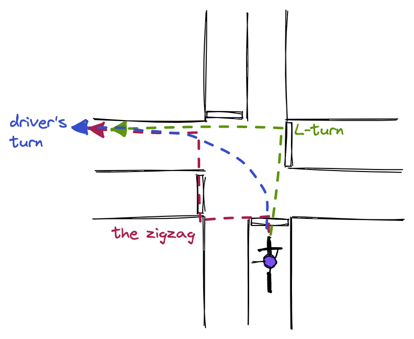

Left Turns
This sections describes the different ways in which a cyclist might handle a
left turn at an intersection, as well as giving some safety and route
planning tips.
I learned how to turn when I was 5. Can we move on to the next topic?
Actually, left turns are one of the most tricky situations to handle for
novice or experienced cyclists alike. They can be a source of confusion
and stress, and even trigger conflicts between drivers and cyclists.
For this reason, it is important to carefully plan one's route to minimize
the occurence of difficult left turns. When they cannot be avoided, one
should ideally decide ahead of time what strategy will be used at a given
intersection. In my experience, leaving that decision to the last minute
can lead to impulsive and unsafe riding.
Right-hand traffic vs left-hand traffic
In most of the world, traffic keeps to the
right side of the road. This being said, a around a third of the world population lives under
left-hand traffic (LHT) rules.
Britain aside, many of the places that still have LHT are former British
colonies, such as India, though there are others left-hand driving
countries without a history of British colonialism like Japan and
Indonesia.
As you might have guessed, this page is written under the assumption of
right-hand traffic, though the concepts are analoguous for right turns in
left-hand traffic zones.
Defining the types of left turns
The following picture illustrates three common ways in which a cyclist can
handle a left turn.

For the sake of this post, let's call them as follows (ordered in terms of
preference):
Driver's Turn
As the name hints, this type of turn simply consists in turning mostly
like a car would. Although it sounds simple, many novice cyclists are
intimidated by this maneuver because it involves taking space in the left
lane, amongst traffic and far from the curb.
It is ok not to feel comfortable turning this way and many cyclists who
have ridden for a long time are still avoiding it. However, it can save
time for those cyclists who feel at ease taking their share of the road.
Steps
-
Before the turn, the cyclist signals left and steers towards the
left-hand side of the road. Where exactly a cyclist should position
himself depends on the type of intersection and number of lanes, but in
general the center of the leftmost lane makes the most sense (more on
positioning later).
-
When the light turns green, the cyclist yields to the oncoming traffic
in the other direction driving through the intersection or turning
right.
-
When there is no longer any oncoming traffic, the cyclist turns left,
sticking to the center of the left lane.
-
Once the 90° turn is completed, the cyclist immediatly signals
right and moves towards the right-hand side.
This turn is my personal favorite when it can be executed safely. In
general, it is the fastest turn of the three as it requires at most a
single traffic light cycle.
Difficulties and safety considerations
-
Yielding to right-turning traffic
Sometimes there will
be a lot of cars across the intersection that want to turn right,
towards the same direction where you are heading. If you are lucky, one
of those drivers will be nice enough to let you go through even though
he has priority.
This situation can be tricky when there are
multiple lanes on the road where you are turning. A car facing this
situation would typically turn in the left lane while the right-turning
traffic would take the right one. This is not really an option for
cyclists who are supposed to stick to the right-hand side once they
finished their turn. If cars are waiting behind, they may become
impatient. Remember that it's your right to wait in the left lane until
you can safely turn.
-
Being overtaken from the right by a left-turning car
Occasionally, a driver might take place on your right and turn left at
the same time as you. This situation can happen if you are positioned
too much towards the left-hand side or not clearly signalling your
intention to turn left. Even if you did everything right, you may also
simply be pushed around by an abusive driver who does not like waiting
behind a cyclist.
When that happens, you might not be able to
move back towards the right-hand side of the street if there is a lot of
left-turning traffic. That really sucks and the only way to get back to
a safe position is to keep calm, signal right and hope that another car
behind will let you get through. Prevention is always a good idea - by
staying in the center of the left lane, it becomes harder for a car to
pretend to ignore you.
-
Communication
With this type of turn, clearly signalling your intention to turn left
is extremely important. Many drivers are not aware that cyclists are
perfectly entitled to turn from the left-hand side of the road.
Sometimes cars might have arrived at the intersection later than you and
did not see you steering and signalling to the left when you were taking
position in the left lane. Ideally, one should stick out an arm during
the whole time where one is waiting for the light to turn green. This
can be bothersome. Personally, I will typically raise it every 10
seconds or so, or when I hear a car arriving behind me.
L-Turn
The "Zigzag"
Lane positioning
Route planning